android launcher · version 2.43 · user guide
Phosphor
Your Android home screen as a retro terminal. Every part of the screen is drawn with text characters on a glowing CRT style display: a big pixel clock, live weather, system gauges, your notifications, cliamp radio and your apps, all on one grid.
Twenty whole looks in one tap, from calm camel and navy or cream and forest to eink paper, the rice palettes like catppuccin, tokyo night and nord, green screen and neon dusk.
This is the guide and the place to report bugs and ask for features. The app itself is on Google Play.
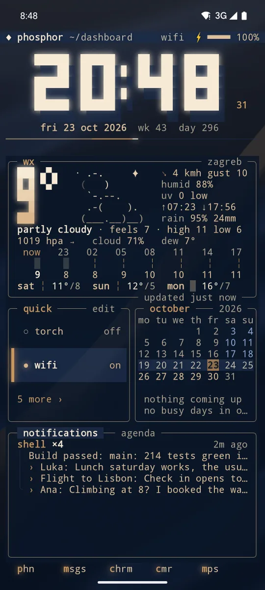
- 20whole looks, one tap each
- 20colour themes, light ones too
- 23moving backgrounds
- 10pages you swipe between
- 41tools, each a page or a panel, 21 more with pro
- 0ads, accounts or analytics
twenty looks
Each preset is a whole look in one tap: theme, picture, wallpaper, crt, weather style and day and night. Your pages, panels, text size and phone wallpaper stay as they are. my own look brings back the look you had before the first preset. Eleven are free; the nine built on a pro theme carry a pro tag.
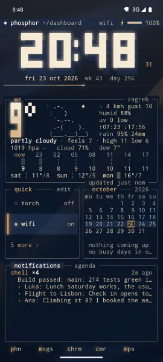
camel and navya camel scarf on navy satin 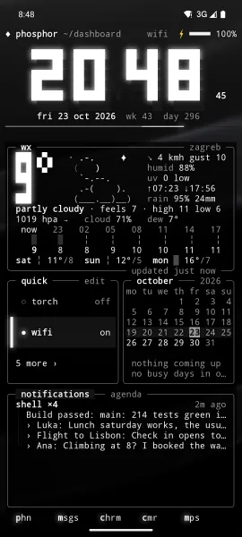
classy black · problack glass on black silk 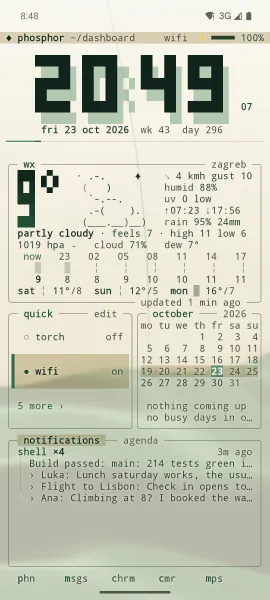
cream and forestforest ink on cream paper 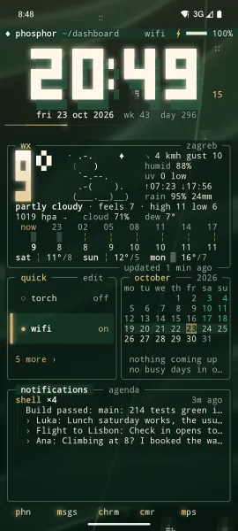
evergreencream on forest, fireflies 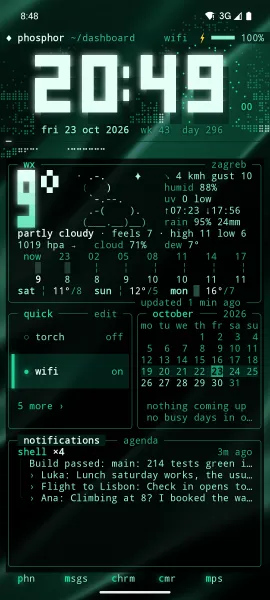
emerald · projade glass, emerald satin 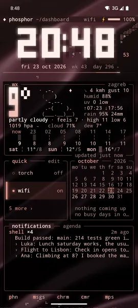
rose · prorose gold, falling petals 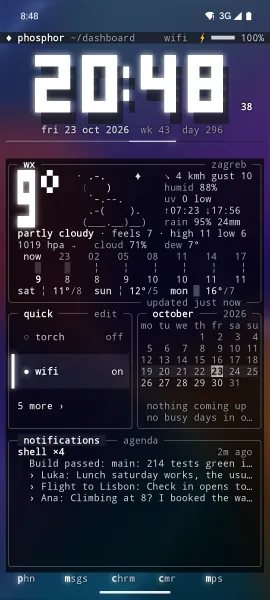
liquid glasssmoked glass, flowing colour 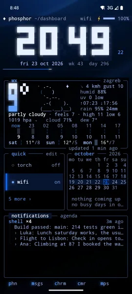
housetrue black, one blue light 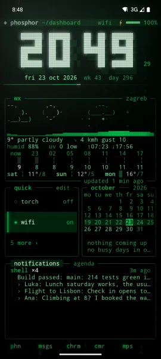
green screengreen phosphor, matrix rain 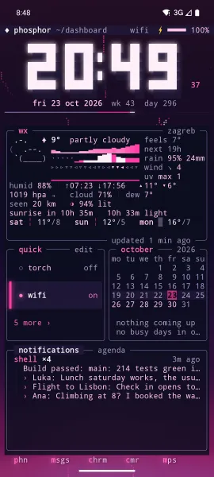
neon dusk · propink neon dusk at warp speed
Ten more, with shots to come:
- eink paper: grey ink on paper, nothing moves
- catppuccin: soft pastels, mocha, quiet stars
- tokyo night: neon city blues in the rain
- gruvbox: warm retro, glowing embers
- nord: arctic blue, falling snow
- catppuccin day and night · pro: latte by day, mocha by night
- dracula · pro: vampire purple, meteors
- rose pine · pro: muted rose, falling petals
- everforest · pro: green forest, fireflies
- kanagawa · pro: the great wave, ink and tide
crt tubes
Glass is free. Amber, green, vhs and curved come with phosphor pro. Amber and green glow in one colour under a gently curved glass, curved keeps your own colours under that glass, and vhs is a rolling tape.
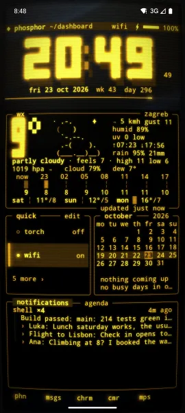
amberpro 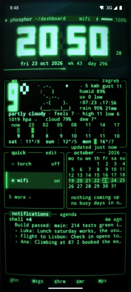
greenpro 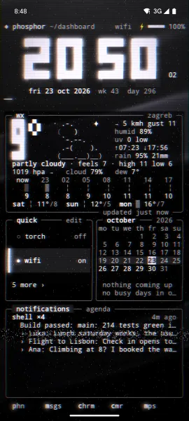
vhspro 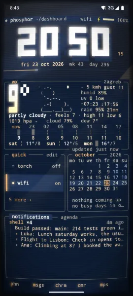
curvedpro
new since 1.67
- browser panel: for insiders. Web pages as text in your theme, like lynx, with bookmarks, reader view and search. Open full for logins and video.
- termux scripts: early access for insiders, part of pro from 1 February 2027. Type
tand a command in the terminal panel, or add a script panel that shows what a script prints, on a timer. - safer: health readings, link keys, the Home Assistant token and the browser's cookies stay out of backups. A bad 2fa backup or feed can no longer crash home.
- lighter: an idle page draws nothing, panels stop when nothing on them moves, and only the vhs tube keeps an idle home drawing.
- fixes: a crash of the fire motion in the small look cards with the vt323 font, and a freeze when home reopens after Android closed it.
- a new first run: pick a look, pick your pages, make it your home. Then a three step tour and short tips.
- one main menu: hold empty space or tap ◆ for looks, ready pages, add a panel, pages, edit layout, settings and help.
- a simpler edit strip:
+ add,moveanddone.keep in placeis on for everyone. - ready pages: at a glance, music, focus, night stand, traveller and more, each added as a new page. The old layouts are in the classic group.
- rice palettes and eink: catppuccin, tokyo night, gruvbox and nord free, latte, dracula, rose pine, everforest and kanagawa with pro, and eink paper where nothing moves.
- your own picture: any photo behind the grid, under looks, fine tune. Text stays easy to read.
- blue light filter: a warm screen in the evening, with its strength, in day and night.
- many new panels: since, punch, water, breathe, tally, qr, tldr, air, holidays, on this day, word clock, snake, pipes, ip, art, photo, whoami, terminal, gauges, dash and cyberspace.
- new pro panels: radar, aurora, quakes, iss, launches, rates, ping, git, ambience, trace, matchday, devices and health.
- cyberspace: read the public cyberspace.online feed for free. With pro, sign in for your feed, inbox, C-Mail and cIRC rooms.
- pull down tiles: quick settings as tiles with sliders, a glance line with your next alarm, event and the weather, and a big player.
- lock screen: a greeting with your name, a small clock, now playing with real cava bars, the next alarm, running timers and a today line.
- you: your name, machine name, contact and motto on the prompt, the top bar and the boot. Type
slfor a steam train. - a privacy page: our promises and every permission Phosphor can ask for, in settings.
- c64 and vt320: two pro themes in cyberspace.online's own colours. The vt320 brings its own font.
- ready for Android 17: link and the ping panel ask for local network access first, and timers ring while you are in another app.
- fileglow: the file manager can take your Phosphor theme, the way Keyglow does.
- quicker and lighter: faster cold start, settings save quicker, the lock wallpaper does half the work, and fixes for Android 7 to 10.
what you get
Everything you see is one character grid. Box lines, blocks and braille are drawn as shapes, so panels join with no gaps. The clock glows, digits glitch when they change, and a background like rain can fall through the empty cells.
- Big pixel clock with a seconds rail
- Live weather as a pixel landscape: the sun, the moon in its real phase, stars, clouds drifting with the wind, rain, snow, lightning and fog. Weather comes from Open Meteo, no account needed
- System gauges for battery, memory and disk, plus a live network chart
- Calendar agenda for your upcoming events
- Notifications with badges on your apps, quiet by default: system noise stays out, and you can hide any app with a hold
- A full screen pull down of your own: clock, quick settings tiles with sliders, your next alarm, event and weather, the player and your notifications
- Media controls, with the album cover softly blurred behind the player in your theme's colours
- cliamp radio built in: Lofi, Meditative, Synthwave, EDM, Chiptunes, Amiga, NCS House, Dubstep, Phonk, Chill and more
- Quick actions you choose yourself: torch, wifi, bluetooth, sound, do not disturb and more
- App drawer with fuzzy search and a letter rail, and a dock with your most used apps
- Panels that snap to a grid like Android widgets, on up to 10 pages, and ready pages to start from
- A lock screen drawn in the same grid, theme and glow as home, with a greeting, now playing and running timers
inside the app
Pages, edit mode and the picker, from a real phone. Scroll sideways for more.
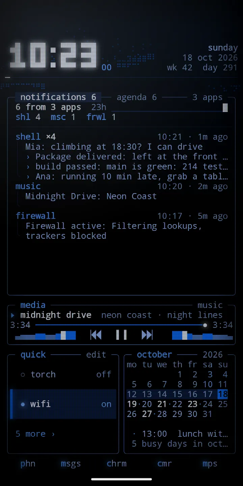
inbox: notifications first 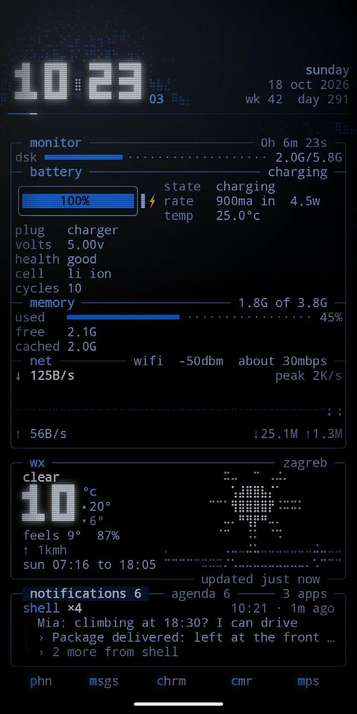
monitor: battery, memory and network 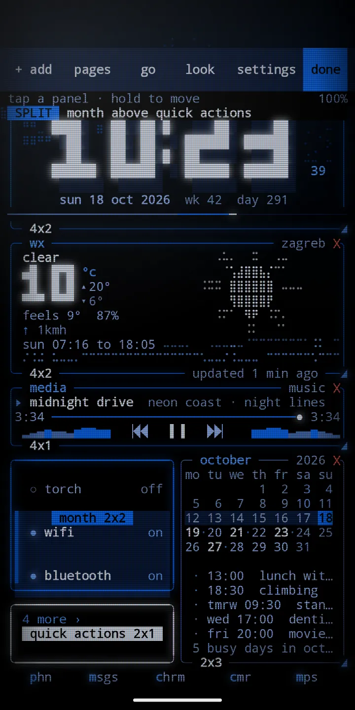
edit mode: size, move and remove panels 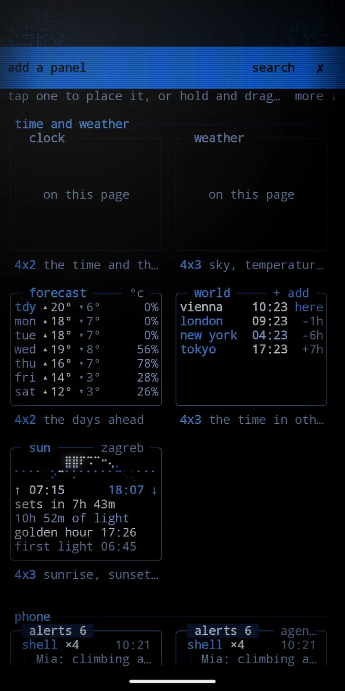
add a panel: the picker 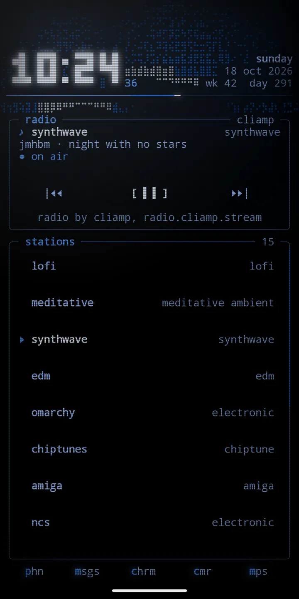
radio: cliamp stations 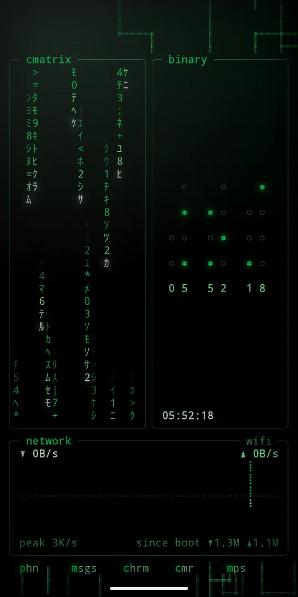
cmatrix, binary and network
phosphor pro, an optional extra
Everything above is yours with the app. For those who want more, one optional purchase in the app adds every extra, now and later, with no subscription:
- Android widgets from your other apps, drawn inside phosphor boxes on the grid, stacked if you like
- 2fa codes, kept encrypted on this phone only: scan a QR code, bring codes over from Google Authenticator, and keep a backup file sealed with a passphrase
- A text and json editor: open a file, format it, check it and walk it as a tree
- Strong passwords and passphrases, made on the phone and never saved
- A clipboard history, off until you turn it on, sealed on this phone
- Contacts in search: type a name or number to call or text
- A news reader with a ticker tape for any RSS or Atom feed
- A gps panel with your position, the sky and every satellite, and a sensors panel with a level, a compass and live traces
- Friend, a little pet with moods
- The cyberspace.online client: your feed, inbox, C-Mail, cIRC chat rooms and the member globe
- Live world panels: rain radar, aurora, earthquakes, the space station, rocket launches and currency rates
- Ping and site checks, trace to any host, and your git contribution graph
- An ambience panel fed by your phone, matchday with live scores, and devices and health panels
- Four CRT tubes, and 31 more themes, among them pure black, pure white, six night themes, five day themes, c64, c128, vt320 and five rice palettes
Settings, phosphor pro. Restore brings pro back on a new phone. More in the guide.
quick start
- Install Phosphor from Google Play. It runs on Android 10 or newer.
- Open it. Three short screens: pick a look, pick your pages, and make it your home. Each one can be skipped.
- The tour then shows three gestures on your own home, and you try each one: swipe sideways, swipe up, and hold.
- Swipe sideways for pages, swipe up for apps and search, pull down for what you picked.
- Hold empty space, or tap ◆ up top, for the main menu: looks, ready pages, add a panel, pages, edit layout, settings and help.
- Open
looksand try the twenty looks.
guide
First run, the tour, gestures, the menu, pages, edit mode, panels, looks, crt, lock screen, settings, pro, battery and accessibility.
use cases
Ideas for a focus phone, a music setup, a work dashboard, a night setup, habits, a hacker look and a calm daily phone.
cookbook
Short recipes: try a look, name your pages, lock with a double tap, a clock font, your Home Assistant, a private cycle tracker, live weather and more.
runbook
When something goes wrong: the home button, the lock gesture, notifications, weather, the screen saver, pro and the subscription, termux, battery, and starting over.
help
Answers to common questions, fixes for common problems, and how to report a bug.